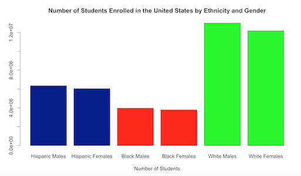

Racial makeup
Funding per Student
Graduation Rates
Offer Advanced Placement Programs
What is educational inequality?
Educational Inequality is the difference in the learning results, or efficacy, experienced by students coming from different groups. Educational efficacy is most often measured by grades, GPA scores, test scores, drop-out rates, college entrance statistics, and college completion rates.[1]

Overall enrollment in public elementary and secondary schools increased from 48.5 million to 50.0 million between fall 2003 and fall 2013, and is projected to continue increasing to 51.4 million in fall 2025 (the most recent year for which projected data are available). In addition, racial/ethnic distributions of public school students across the country and within its regions have shifted. These changing distributions may reflect demographic shifts in the population. “
People of color are expected to become the majority of the US population by 2040, but they do not have equal access to education...

With a push in STEM education, it is important that everyone has an equal opportunity to pursue these careers. However, not all schools, especially those that lack funding, do not offer advanced courses in the sciences and mathematics...
Even when students of color have access to advanced courses, many of them are discouraged to enroll in these courses by outside factors that some of their peers do not have to worry about...

“There are large gaps between white children and their black and Hispanic classmates. The gaps are largest in places with large economic disparities"
Access to college is even more limited. Research has shown that standardized testing is biased against people of color, and those that come from lower income brackets...

Students of color face many barriers while traversing the education pipeline that set them back from landing their dream jobs and entering their careers with experience under their belt, thus it is important to consider not only their skills, but also their backgrounds...
The Data
The data on this site is generated from [INSERT OUR SOURCE AND A LINK]. Additional resources for this project and information on
Resources
STATE REPORTS ON CS ACCESSIBILITY AND EDUCATIONMONEY, RACE, and SUCCESS - NYT
GRADUATION RATES BY STATE
Credits
[1] Williams, Belinda, ed. Closing the Achievement Gap: A Vision for Changing Beliefs and Practices. 2nd ed. Alexandria, VA: Association for Supervision and Culone
Created by Cindy Hernandez, Edwin Villafane Hernandez, Jonatan Yucra Rodriguez, & Kendal Cockrel.